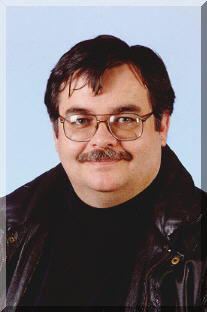

|
 Earl Lee is a graduate of Cave City (Ark.) High School, Lyon College in Batesville and the Univ. of Arkansas at Fayetteville. He also has a Masters degree from the University of Wisconsin-Madison. Lee is currently a Professor at Pittsburg (Kan.) State University and serves on the editorial board of The Midwest Quarterly. Lee is the author of a novel Drakulya (1994), and a collection of essays Libraries in the Age of Mediocrity (1998).
|